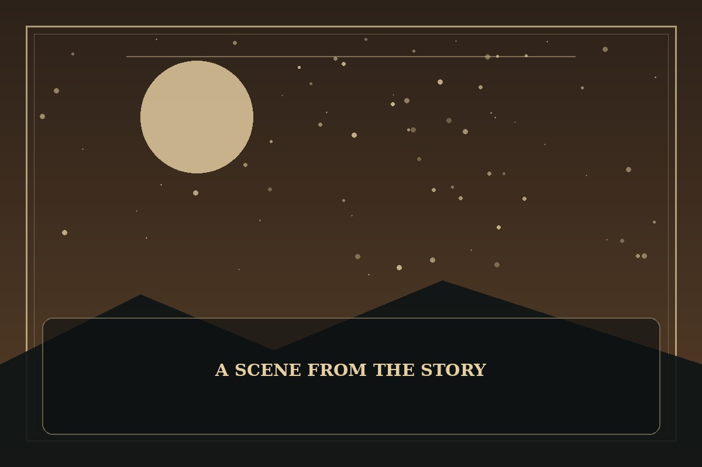

The Novel's Extra
Synopsis
A writer wakes inside a fictional world and discovers that the story no longer follows the outline he remembers. To survive, he must understand the people who were once only characters on a page.
Chapter 1: The Margin Notes
The academy smelled exactly like the setting he had described in his manuscript: rain on old stone, polished wood, and the faint scent of ink. What it did not contain was a welcome desk or an explanation for why he had awakened in a student uniform.
He remembered the broad strokes of the plot but not every small choice that made people trust or despise one another. The students were not lines of dialogue anymore; they had worries, rivalries, and private lives that never made it into his draft.
That evening, he opened a notebook and stopped trying to force the story back onto its original path. If he wanted to survive this world, he would have to listen to the people living in it—and accept that a writer could be wrong about his own characters.

This fan-made sample is an original piece created for a student website project; it is not an official chapter of The Novel's Extra.